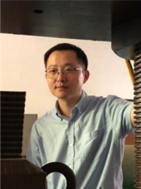

吴迪
简介
职称：副研究员
学位：博士
研究领域：结构抗震、减震控制、智能仿真分析
办公地点：广州市大学城广州大学减震大楼302
办公电话：13728070678
电子邮箱：wdzooo@qq.com
个人简介
灾害防御协会减隔震专业委员会委员、国际计算机科学与信息技术协会委员、中国振动工程学会结构抗振控制与健康监测专业委员会青年委员等，任《华南地震》编委，Journal of Structural Engineering、Earthquake Engineering and Engineering Vibration、Mathematical Problems in Engineering审稿人等。负责主持国家基金面上项目、教育部博士点项目、广东省科技计划重点项目、珠江科技新星项目、广东省高等学校“千百十工程”等20项；已在期刊等发表SCI和EI检索论文50余篇；授权发明和实用新型专利24项。积极从事社会公益服务，2018年汶川地震灾害发生后，积极参加广州市对口威州镇的援建工作，受四川省灾区邀请赴阿坝州对9个县进行隔震技术服务。
教育背景
2011年-2013年，不列颠哥伦比亚大学，博士后；
2008年，日本名古屋工业大学，访问学者；
2005年-2008年，同济大学，博士；
2002年-2005年，华东交通大学，硕士；
教授课程
《土木工程防灾减灾概论》、《BIM技术应用》、《建筑结构与选型》、《现代结构实验》
人才计划和获奖及荣誉
2019年，岭南英杰计划人才
2019年，广州市高层次人才
吴迪.第28届全国结构工程优秀论文,一等奖, 2019
吴迪.第25届全国结构工程优秀论文,二等奖, 2016